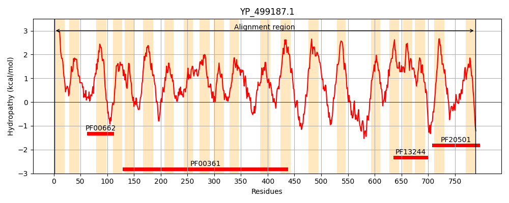
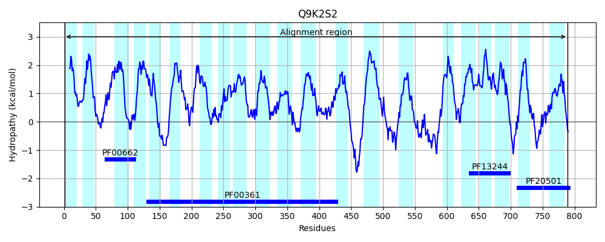
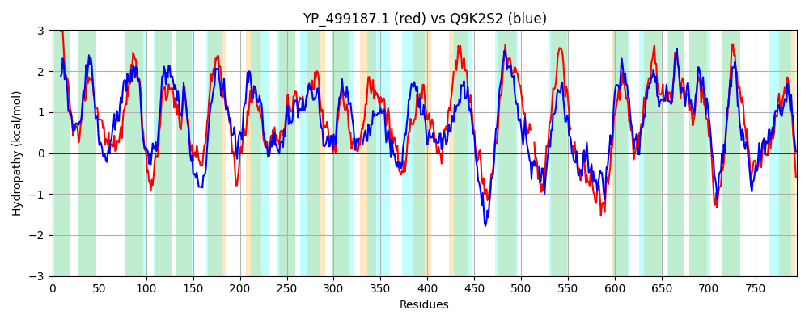

Hit Accession: Q9K2S2
Hit TCID: 2.A.63.1.4
Hit Description: gnl|BL_ORD_ID|18326 gnl|TC-DB|Q9K2S2|2.A.63.1.4 Na(+)/H(+) antiporter subunit A - Bacillus subtilis.
Mach Len: 794
e:0.000000
Query TMS Count : 21
Hit TMS Count: 21
TMS-Overlap Score: 18.050000
Predicted Substrates:CHEBI:9175;sodium(1+), CHEBI:5584;hydron
BLAST Alignment:
Score: 1495 , Bit scores: 580 bits, E-value: 0.0e+00, Alignment length: 794, Percentage identity: 40
Query: 1 MSLVYLLIAILVIMAMILLMSKRRALAKYAGYIALVAPVISSIYFLIQIPSVAKLQYLSTSIPWIKTLDINLDLRLDGLSLMFSLIISLIGIAVFFYATQYLSSRKDNLPRFYFYLTLFMFSMIGIVLSDNTILMYIFWELTSVSSFLLISYWYNNGDSQFGAIQSFMITVFGGLALLVGFIMLYIMTGTNNITEILGQADHIKNHGLFIPMIFMFLLGAFTKSAQFPFHIWLPRAMAAPTPVSAYLHSATMVKAGIFLLLRFTPLLGLSNMYVYIVTFVGLITMLFGSITALKQWDLKGILAYSTISQLGMIMAMVGIGGGYAQHQQDAIASIYVFVLFGALFHLMNHAIFKCALFMGVGILDHEAGSRDIRILSGMRQLFPKMNLVMTIAALSMAGVPFLNGFLSKEMFLDALTQTGQLSQFSLISM-IAIVFVGVIASVFTFTYALYMVKEVFWTKYDSKVFTKKNIHEPWLFSLPSLILMVLVPVIFFVPNIFGKGIIVLALRAVSG---GNHQIDQLAPHVSQWHGFNIPLLLTIIIILLGSVLAIKVD-WKKVFTGKIRQISVSKSYEMVYRHFEKFATKRFKRVMQDRLNQYIIMTLGIFMIIIGYGYIRIGLPKVHQLHVSEFGALEIILAIVTVTIGISLIFIRQRLTMVILNGVIGFVVTLFFIAMKAPDLALTQLVVETITTILFIVSFSRLPNVPRSNANKKREIIKISVSLLMALIVVSLIFITQQTDGLSSISDFYLK-ADKLTGGKNIVNAILGDFRALDTLFEGLVLIITGLGIYTLL 788
M L++L I + A I+ + A + G+ L+ PV+ IYFL I + L + + WI +L IN + +DGL L+F+L+I+ IG V Y+ YLS K+ L FY YL +FM +M+G+VL DN +++Y+FWELTS+SSFLLI YWY S++GA +S +ITV GGL +L GFI+LY++T + +I E++ Q I H LFIP + + LLGAFTKSAQFPF+IWLP AM APTPVSAYLHSATMVKAGI+++ RF+P+ S + +IV+ VGL TM++GS A+KQ DLK ILA+ST+SQLGMI++M+G+ + Y A+FHL+NHA FK +LFM VGI+DHE G+RDIR L G+ + P + I SMAG+P NGFLSKEMF ++ + F++ + + I SVFTF Y++ ++ + F Y + K+ P +P +IL+ L +FF PNI +I A+ ++ H ++ H+SQWHG LL+T I+++G++ + ++ WK ++ ++++++ Y+ + EK + + K+ M L Y++ F+I+IG + G +++ G EIIL +V ++ ++ +F R RLT +I GV+G+ + LFF+ +APDLALTQLV+ETI+ LF++ F LP + + + +SL + +IV L + SI+ F++K + L GG N+VN IL DFR DT+FE VL I LGIY+++
Sbjct: 1 MQLLHLAILSPFLFAFIIPFLAKYAKRVHTGWFVLILPVLLFIYFLPMIRMTQSGETLRSVLEWIPSLGINFTVYIDGLGLLFALLITGIGSLVTLYSIFYLSKEKEQLGPFYVYLLMFMGAMLGVVLVDNVMVLYMFWELTSLSSFLLIGYWYKREKSRYGAAKSLLITVSGGLCMLGGFILLYLITDSFSIREMVHQVQLIAGHELFIPAMILILLGAFTKSAQFPFYIWLPDAMEAPTPVSAYLHSATMVKAGIYVIARFSPIFAFSAQWFWIVSLVGLFTMVWGSFHAVKQTDLKSILAFSTVSQLGMIISMLGVSAAALHYGH---TEYYTVAAMAAIFHLINHATFKGSLFMAVGIIDHETGTRDIRKLGGLMAIMPITFTISLIGTFSMAGLPPFNGFLSKEMFFTSMLRVTHFDLFNVQTWGVLFPLFAWIGSVFTFIYSMKLLFKTFRGNYQPEQLEKQAHEAPVGMLVPPVILVALAVSLFFFPNILSYSLIEPAMNSIYPTLLDGH--EKFHVHISQWHGVTTELLMTAGIVVIGTIGYLSLNKWKGIYKLFPSKLTLNRLYDKLLTMMEKGSYRVTKQYMTGFLRDYLLYIFAGFIILIGGAFAIKGGFSFKTEGMAKIGVYEIILTLVMISATVATVFARSRLTAIIALGVVGYTLALFFVIFRAPDLALTQLVIETISVALFLLCFYHLPKLRLKTKTRTFRMTNFIISLGVGVIVTLLGIASSSQRTKDSIASFFVKHSHDLGGGDNVVNVILVDFRGFDTMFEITVLTIAALGIYSMI 789 | Protein Hydropathy Plots: |
|---|
|  |  |
Pairwise Alignment-Hydropathy Plot:
|
|---|
|  |